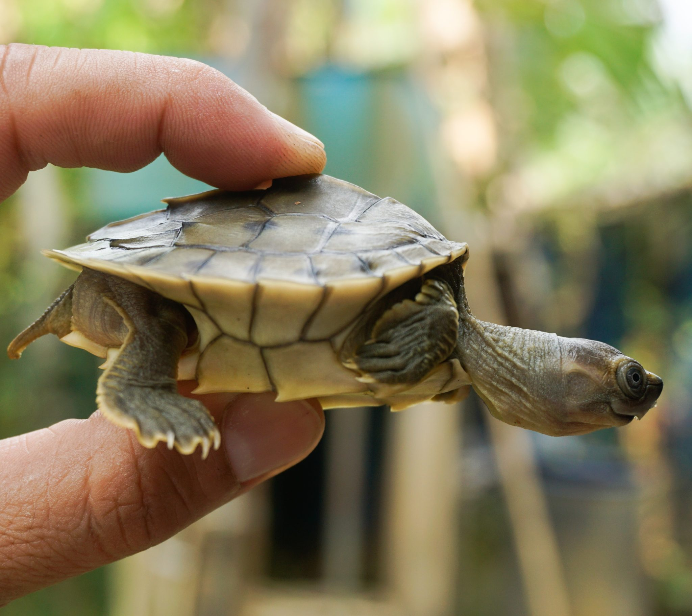
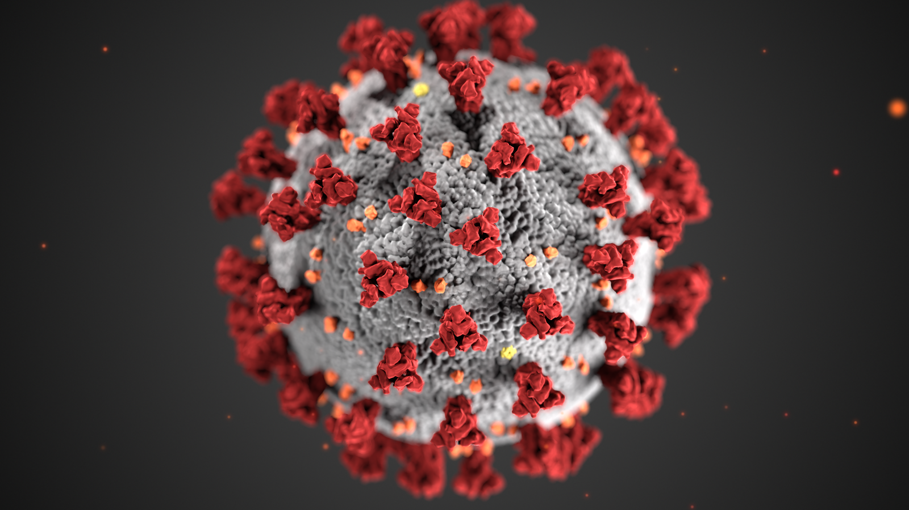

places must visit
Brittos
I had visited in dec 2020
Brittos is one of the famous restaurent in north goa its a beach side restaurent which means half restaurent is in the beach andthe other part is a bit away from the beach.there the food is very good and delicious.
review on th movies

Excellent film
Its a very good and amazing movie .If you are searching for a movie to watch here it is.
news about environment
-
Species back from the brink of extinction
Amid the troubling trend of biodiversity loss, researchers and conservationists have carried out ambitious rescues and captive-breeding programs, bringing several species back from the brink of extinction in 2020. A captive-breeding and reintroduction program has helped boost the wild population of the black stilt or kakī (Himantopus novaezelandiae), a critically endangered wading bird from New Zealand, by 30% over the past year. The program released 104 captive-bred birds into the wild this August. After their rescue from a vanishing stream in northern Chile, the last known 14 Loa water frogs (Telmatobius dankoi) produced 200 tadpoles this October. Burmese roofed turtles (Batagur trivittata), once considered extinct, were reared in captivity in Myanmar. The captive population grew to nearly 1,000 turtles this year and the species is in little danger of biological extinction. Several species believed to be extinct were “rediscovered” this year. The New Guinea singing dog, thought to exist only in captivity, was found in the wild using eDNA sampling. On an expedition in Bolivia researchers found a devil-eyed frog (Oreobates zongoensis) and a satyr butterfly (Euptychoides fida) not recorded for 98 years. In northwestern Madagascar, a chameleon not seen in more than 100 years, Furcifer voeltzkowi, was found in a hotel garden. Also more than 100 years after its last recorded sighting, a plant, Olax nana, has been rediscovered in Gujarat and the village now fights to protect it.
-
WHO says coronavirus unlikely to have leaked from China lab
WUHAN: A World Health Organisation expert said Tuesday the coronavirus Coronavirus disease (COVID-19) is an infectious disease caused by a newly discovered coronavirus. Most people infected with the COVID-19 virus will experience mild to moderate respiratory illness and recover without requiring special treatment. Older people, and those with underlying medical problems like cardiovascular disease, diabetes, chronic respiratory disease, and cancer are more likely to develop serious illness. The best way to prevent and slow down transmission is to be well informed about the COVID-19 virus, the disease it causes and how it spreads. Protect yourself and others from infection by washing your hands or using an alcohol based rub frequently and not touching your face. The COVID-19 virus spreads primarily through droplets of saliva or discharge from the nose when an infected person coughs or sneezes, so it’s important that you also practice respiratory etiquette (for example, by coughing into a flexed elbow).